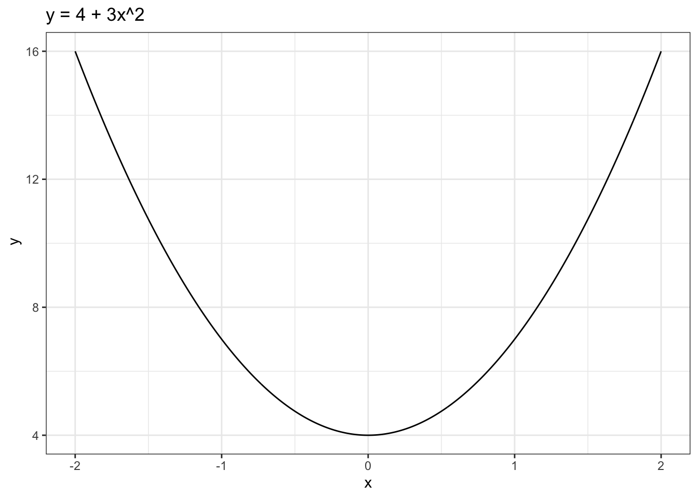

Problema 10: Determina la derivada de \(y\) con respecto a \(x\) (dy/dx) en la siguiente ecuación: \(y = 4x^3 - 6x^2 + 5x - 8\)
Solución: Aplicando la regla de potencias: \(\text{dy/dx} = 12x^2 - 12x + 5\)
Problema 11: Encuentre la derivada de: \(y = x^6 - 3x^4 + 2x^3 - x + 1\)
Solución: Aplicando la regla de potencias: \(\text{dy/dx} = 6x^5 - 12x^3 + 6x^2 - 1\)
Problema 12: Dada la función: \(y = 4 + 3x^2\)
Grafica la función.
Identifica por inspección visual el valor de \(x\) en que la función alcanza su mínimo.
Determina el valor de la pendiente en ese punto.
Solución:
Para graficar la función utilizamos el paquete ggplot2 en R:
library(ggplot2)# Crear una secuencia de valores para xx_vals <-seq(-2, 2, 0.01)# Calcular los valores correspondientes de y para cada xy_vals <-4+3*x_vals^2# Crear un dataframe con x,ydf <-data.frame(x = x_vals, y = y_vals)# Graficar usando ggplotggplot(df, aes(x=x_vals, y=y_vals)) +geom_line() +labs(title="y = 4 + 3x^2", x="x", y=" y") +theme_bw()

Al inspeccionar visualmente el gráfico se observa que la función alcanza su valor mínimo en \(x = 0\).
La derivada de \(y = 4 + 3x^2\) es: \(\text{dy/dx} = 6x\). Por tanto, evaluando cuando \(x = 0\) obtenemos \(6(0) = 0\). Por tanto, cuando la función alcanza su máximo la pendienten de la curva es cero.
La derivada de una función representa la tasa de cambio de \(y\) con respecto a \(x\): \(\text{dy/dx}\). Conceptualmente indica cómo cambia \(y\) cuando hacemos un pequeño cambio en \(x\). Para la función \(y = 4 + 3x^2\), la derivada \(\text{dy/dx} = 6x\) nos dice que la pendiente de la curva cambia linealmente con \(x\). En \(x = 0\), la pendiente es cero, lo que indica que la función no cambia en ese punto. Una derivada positiva indica que la función está aumentando en ese intervalo, mientras que una derivada negativa indica que la función está disminuyendo.